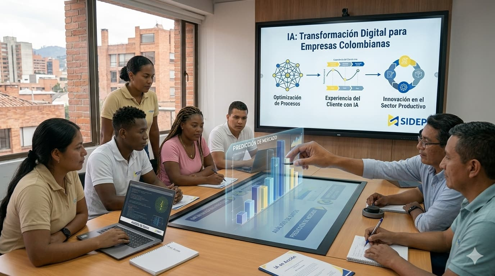

01
Fundamentos y herramientas
Reconocimiento de conceptos, posibilidades y herramientas de IA útiles para distintos entornos laborales.
Formación continua para que funcionarios públicos y privados integren la inteligencia artificial en sus procesos administrativos con una visión innovadora, estratégica y responsable.

El futuro aplicado al presente
Tecnología que transforma la gestión y el servicio.
Nuestro propósito
Inteligencia Artificial 5.0 acerca las nuevas tecnologías a los equipos de trabajo mediante experiencias de aprendizaje claras, prácticas y conectadas con sus responsabilidades reales.
El programa impulsa una adopción consciente de la IA para optimizar tareas, apoyar la toma de decisiones y mejorar los procesos administrativos sin perder el enfoque humano y ético.
Conceptos esenciales explicados de manera accesible y aplicada.
Herramientas para simplificar tareas y fortalecer la productividad.
Uso estratégico de datos y soluciones digitales en la gestión.
Criterios éticos y humanos para una adopción segura de la tecnología.
Aprendizaje para transformar
Un recorrido desde los fundamentos hasta la aplicación estratégica de la inteligencia artificial.
Reconocimiento de conceptos, posibilidades y herramientas de IA útiles para distintos entornos laborales.
Ejercicios prácticos para automatizar tareas, organizar información y optimizar procesos cotidianos.
Buenas prácticas para implementar soluciones tecnológicas con seguridad, criterio y enfoque humano.
Talento para la era digital
Resultados que buscamos
Personas preparadas para comprender y aprovechar las nuevas tecnologías.
Mayor agilidad y capacidad para responder a retos administrativos.
Adopción de IA con visión estratégica, responsable y centrada en las personas.
Trabajemos juntos
Solicita información sobre la formación y descubre cómo preparar a tu equipo para los desafíos de la transformación digital.